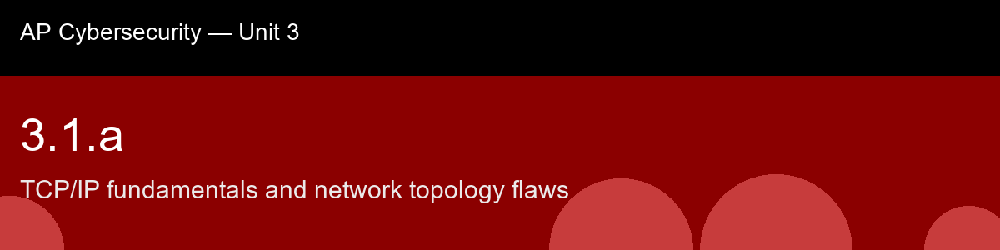

3.1.a recap, TCP/IP fundamentals and network topology flaws
Nice work today. Here's what to lock in:
- Recap handout:
post-lecture-handout.docx
- Simulation: SimLab
- Self-check quiz: due before next class
The big picture: The move worth carrying forward out of this skill is asking, for any attack, "which layer does this operate at, and which layer must the defense operate at?" That single question is what turns the four-layer stack from a memorization exercise into an actual diagnostic tool: IP spoofing gets fought at the internet layer, ARP spoofing (3.1.c) at the network access layer, DNS poisoning (3.1.b) at the application layer, and a flat topology's blast radius gets fought by segmenting the network itself rather than patching any single layer at all. Notice too that this skill quietly previews the entire rest of Unit 3, DNS attacks, MITM, packet sniffing, VLANs, firewalls, IDS/IPS are all just this skill's four weaknesses (unauthenticated IPs, predictable handshakes, trusting ARP, forgeable DNS) getting their own dedicated defense in later atoms. If you understand why TCP/IP trusts everyone, you already understand why the rest of this unit exists.
Key terms to lock in:
- TCP/IP, the suite of protocols governing internet communication, organized into four layers: application, transport, internet, network access.
- Encapsulation, each layer wraps data from the layer above in its own header, creating a protocol data unit (frame, packet, segment, data).
- IP address, a numerical label assigned to a device at the internet layer; identifies source and destination of packets. IPv4 = 32-bit; IPv6 = 128-bit.
- MAC address, a 48-bit hardware identifier used at the network access layer for communication within a single local segment.
- Port number, a 16-bit number at the transport layer identifying which application service should handle incoming data.
- IP spoofing, forging the source IP address in a packet header to hide the sender's true identity or impersonate another host.
- Three-way handshake, the TCP connection setup sequence: SYN (client), SYN-ACK (server), ACK (client).
- Network topology, the arrangement (physical or logical) of devices and links in a network; shape determines broadcast domains and attack surface.
- Network segmentation, dividing a network into isolated subnets or VLANs to limit lateral movement after a breach.
- MAC flooding, sending large numbers of fake MAC entries to overflow a switch's table, causing it to broadcast all frames.
Common misconceptions -- don't fall for these:
- "Switches make sniffing impossible." → Switches reduce passive sniffing but MAC flooding and ARP spoofing let attackers redirect traffic through their own machine even on switched networks.
- "IP addresses prove identity." → IP addresses are easily forged; they are routing labels, not authentication tokens. Actual identity verification requires higher-layer mechanisms (TLS certificates, authenticated protocols).
- "A firewall on the perimeter is enough." → Flat internal networks let a compromised internal host reach everything; segmentation is needed to contain breaches inside the perimeter.
Learning objective(s): 3.1.A

## 3.1.a recap, TCP/IP fundamentals and network topology flaws
Nice work today. Here's what to lock in:
- Recap handout: `post-lecture-handout.docx`
- Simulation: SimLab
- Self-check quiz: due before next class
**The big picture:** The move worth carrying forward out of this skill is asking, for any attack, "which layer does this operate at, and which layer must the defense operate at?" That single question is what turns the four-layer stack from a memorization exercise into an actual diagnostic tool: IP spoofing gets fought at the internet layer, ARP spoofing (3.1.c) at the network access layer, DNS poisoning (3.1.b) at the application layer, and a flat topology's blast radius gets fought by segmenting the network itself rather than patching any single layer at all. Notice too that this skill quietly previews the entire rest of Unit 3, DNS attacks, MITM, packet sniffing, VLANs, firewalls, IDS/IPS are all just this skill's four weaknesses (unauthenticated IPs, predictable handshakes, trusting ARP, forgeable DNS) getting their own dedicated defense in later atoms. If you understand why TCP/IP trusts everyone, you already understand why the rest of this unit exists.
**Key terms to lock in:**
- **TCP/IP**, the suite of protocols governing internet communication, organized into four layers: application, transport, internet, network access.
- **Encapsulation**, each layer wraps data from the layer above in its own header, creating a protocol data unit (frame, packet, segment, data).
- **IP address**, a numerical label assigned to a device at the internet layer; identifies source and destination of packets. IPv4 = 32-bit; IPv6 = 128-bit.
- **MAC address**, a 48-bit hardware identifier used at the network access layer for communication within a single local segment.
- **Port number**, a 16-bit number at the transport layer identifying which application service should handle incoming data.
- **IP spoofing**, forging the source IP address in a packet header to hide the sender's true identity or impersonate another host.
- **Three-way handshake**, the TCP connection setup sequence: SYN (client), SYN-ACK (server), ACK (client).
- **Network topology**, the arrangement (physical or logical) of devices and links in a network; shape determines broadcast domains and attack surface.
- **Network segmentation**, dividing a network into isolated subnets or VLANs to limit lateral movement after a breach.
- **MAC flooding**, sending large numbers of fake MAC entries to overflow a switch's table, causing it to broadcast all frames.
**Common misconceptions -- don't fall for these:**
- "Switches make sniffing impossible." → Switches reduce passive sniffing but MAC flooding and ARP spoofing let attackers redirect traffic through their own machine even on switched networks.
- "IP addresses prove identity." → IP addresses are easily forged; they are routing labels, not authentication tokens. Actual identity verification requires higher-layer mechanisms (TLS certificates, authenticated protocols).
- "A firewall on the perimeter is enough." → Flat internal networks let a compromised internal host reach everything; segmentation is needed to contain breaches inside the perimeter.
**Learning objective(s):** 3.1.A